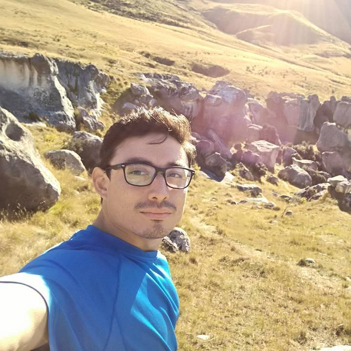

MATIAS FARFAN

Summary
I am a motivated and hardworking individual seeking a new career opportunity.
I have a strong background in hospitality and I have consistently received positive feedback for my hardworking attitude and professionalism.
I am now looking for a new path that will allow me to utilize my skills and continue growing personally and professionally.
Education
- Degree in Ecotourism administration. Santiago, Chile. (2009 - 2014)
- English Course at Wall Street Institute. Satiago, Chile. (2015)
Work Experience
Chef de Partie, Pig and Whistle Pub (2017 - 2022)
- Preparing, cooking and presenting high quality dishes.
- Assisting the Head Chef and Sous Chef in creating menu items, recipes and developing dishes.
- Assisting with the management of food hygiene practices.
- Overseeing the maintenance of kitchen and food safety standards.
- Ensure effective communication between staff by maintaining a secure and friendly working environment.
- Carry out any other duties as required by management.
General Labourer, AWF Staff Christchurch (2016 - 2017)
- Assisting in the loading and unloading of materials and equipment.
- Operating tools and equipment as needed, including hand tools and power tools.
- Completing tasks as assigned by the construction supervisor or foreman.
- Adhering to all safety protocols and guidelines on the construction site.
- Maintaining a clean and organized work area to ensure efficiency and safety.
Skills
- Excellent time management and organizational skills.
- Great communication and team player.
- Strong attention to detail and multitask in a fast-paced environment.